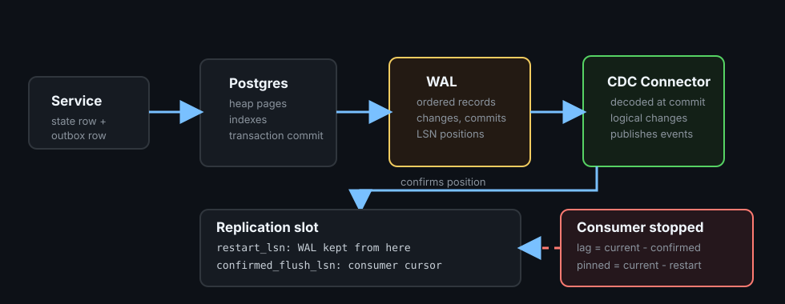

PostgreSQL WAL for CDC
CDC works because PostgreSQL already writes every committed change to an ordered log. Logical decoding turns that log into row-level changes a connector can resume from, and a replication slot is the bookmark that makes resuming safe.
TLDR
- WAL is the source stream: PostgreSQL records changes in WAL before changed table pages have to reach disk.
- Logical decoding emits changes at commit: the decoder reads all WAL, buffers each transaction, and hands it over only once it commits. Since PostgreSQL 14 a plugin can opt in to streaming large in-progress transactions, which makes aborts the consumer's problem.
- LSNs give order and resume points: a connector should resume from log position, not from wall-clock time.
- A slot pins WAL through
restart_lsn: a stopped connector means WAL piles up on disk.restart_lsnmoves only after the consumer confirms and decoding passes a new running-transactions record, not on every confirmation. - Capping retention costs the consumer:
max_slot_wal_keep_sizeprotects the disk by invalidating the slot, after which the connector must resnapshot. - Debezium is not magic: it is an operator-friendly reader of PostgreSQL logical changes, with offsets, snapshots, schema handling, and delivery to Kafka.
Mental Model
Think of WAL as PostgreSQL's durable transaction tape. Heap pages and indexes are the database's current shape, but WAL is the ordered record of how that shape changed. With default settings, a commit is acknowledged once the relevant WAL is durable. After a crash, PostgreSQL replays WAL. For CDC, a logical decoder reads that same stream, reassembles it per transaction, and converts storage-level changes into table-level changes at commit.
A replication slot is the connector's bookmark. It says, "do not remove the WAL I still need." That is what lets a connector stop and resume without missing committed changes. It is also why CDC has an operational failure mode: if the connector stays stopped, PostgreSQL keeps the WAL behind the slot and disk usage grows.

Ground-Up Explanation
WAL before data pages
PostgreSQL does not need to flush every modified table page before acknowledging a commit. It must first flush the WAL records that describe the change. Later, checkpoints and background writes can move dirty heap and index pages to their files. This is the write-ahead rule: the recovery log reaches durable storage before the data page it protects.
Physical versus logical replication
Physical replication copies WAL as storage changes. It is good for standby databases because it reproduces the same cluster state. Logical decoding can expose table changes through an output plugin: insert, update, delete, truncate, begin, and commit, subject to which tables are selected and what row identity is recorded. CDC tools use logical decoding because downstream systems usually need business rows and event payloads, not database page bytes.
The output plugin sets the format and the table selection. test_decoding prints every table as text and is for learning. pgoutput, the plugin Debezium and built-in logical replication use, emits a binary protocol for the tables named in a publication.
Why commit boundaries matter
A CDC consumer must not publish events from a transaction that might roll back. The decoder reads WAL in write order, which interleaves concurrent transactions, so it buffers each transaction's changes in a reorder buffer and emits them in commit order only when the commit record arrives. If a transaction inserts a state row and an outbox row, consumers see both as one ordered unit, and only after commit.
The cost lands on the server. A large transaction occupies the reorder buffer until it commits, and past logical_decoding_work_mem (64MB by default) the buffer spills to disk under pg_replslot/. It also delays visibility of that transaction downstream. Since PostgreSQL 14, a plugin can opt in to streaming large in-progress transactions before commit, trading that delay for a stream-abort the consumer must handle.
What a row change carries: replica identity
An INSERT carries the new row. An UPDATE or DELETE also needs to identify which row it touched, and that is controlled per table by REPLICA IDENTITY, applied when the change is written to WAL.
- DEFAULT: the primary key. A DELETE carries only the key. An UPDATE carries the new row, and the old key only if the key itself changed.
- FULL: the entire old row, at the cost of more WAL per change.
- No primary key: with DEFAULT there is nothing to identify the row. A
pgoutputpublication rejects UPDATE and DELETE on such a table outright. - Large values: unchanged large (TOASTed) values may be left out of a change, so a consumer cannot assume every column is present.
- DDL is not decoded: altering a table, including its replica identity, produces no change event, so schema changes need their own coordination with connectors.
Concept Deep Dive
The pieces
| Piece | Role in CDC | Operational question |
|---|---|---|
| WAL | Ordered durable record of database changes. | How much WAL is being generated and retained on disk? |
| LSN | Log Sequence Number, a position in WAL. | Where did the connector last safely reach? |
| Logical decoding | Turns WAL into table-level changes, per transaction, at commit. | Which tables and publications are included? |
| Replication slot | Pins the WAL a consumer still needs. | Is any slot lagging, inactive, or invalidated? |
confirmed_flush_lsn | The latest position the consumer has confirmed. | How far behind the current WAL position is it? |
restart_lsn | The oldest WAL the slot still needs. This is what pins WAL. | Is it advancing, or stuck behind a long transaction or a stalled consumer? |
| Output plugin | Formats decoded changes, for example pgoutput or test_decoding. | Can the connector parse the format and schema changes? |
| Connector offset | External record of what the connector has emitted. | Can it restart without duplicates or gaps? |
Ordering boundary
WAL order is database order, not user-interface time. Two requests can arrive in one order and commit in another. CDC follows the commit order. For an outbox table, that is usually what you want: downstream systems react to committed state, not attempted state.
Snapshots and streaming
A new connector often needs a starting point. It may take an initial snapshot of existing rows, then stream new changes from a slot. The handoff matters: the connector must know which WAL position corresponds to the snapshot boundary, otherwise it can miss rows or emit duplicates. Mature CDC tooling exists largely to manage that boundary, schema changes, retries, and offsets.
Retention: two cursors, one cap
A slot has two positions. confirmed_flush_lsn is what the consumer has acknowledged. restart_lsn is the oldest WAL the decoder would need to start over from, and it is the one that holds WAL on disk. They are not the same, and confirming does not immediately move restart_lsn:
- Decoding must reassemble transactions, so it can only restart from a point where no earlier transaction is still open. PostgreSQL logs these points as running-transactions records, written at checkpoints and periodically by a background process.
restart_lsnadvances when decoding has passed such a record and the consumer has confirmed past it. It cannot pass the start of a transaction that was still running at that record.- Once it moves, the next checkpoint is allowed to remove or recycle the older segments. Recycling renames a segment for future use instead of deleting it, so file counts alone understate what was released.
pg_replication_slots.wal_status reports where the slot stands against the cap: reserved (within max_wal_size), extended (beyond it, kept by the slot), unreserved (about to be lost), and lost. By default a slot can pin unlimited WAL. max_slot_wal_keep_size sets a limit; once the pinned WAL exceeds it, a checkpoint invalidates the slot and its WAL can be removed. That protects the primary's disk and sacrifices the consumer, which can no longer resume and must resnapshot. A full pg_wal volume is worse: the server can fail outright.
Implementation Details
- Enable logical WAL intentionally: set
wal_level=logicaland allow enough replication slots and WAL senders for the connectors you run. - Monitor slots: watch
pg_replication_slots, especiallyactive,wal_status,restart_lsn, andconfirmed_flush_lsn, plus the actual size ofpg_wal. - Keep transactions bounded: large commits become large decoding units, spill to disk, and delay event visibility.
- Choose replica identity deliberately: tables you publish should have a primary key; use FULL only when consumers need the old row.
- Use stable event identifiers: logical decoding and Debezium are normally at-least-once at the edge, so consumers still need idempotency.
- Plan schema changes: DDL is not decoded, so database migrations must be compatible with deployed connectors and consumers.
Production examples
A shipping service can write a state row and an outbox row in one transaction. Debezium reads the committed outbox insert from PostgreSQL WAL and publishes an ItemShipped event to Kafka. If Debezium restarts, it resumes from its slot and connector offset. Consumers may still see duplicates, but they should not miss the committed event as long as the slot and connector state are healthy.
A reporting pipeline can stream committed table changes into a warehouse. The source database should alert on slot lag, retained WAL, connector errors, and snapshot duration. The warehouse should treat the stream as ordered by source log position, not by row timestamps.
Lab Evidence
The runnable lab is labs/postgres/wal-cdc: PostgreSQL 17.2 with wal_level=logical, deliberately small WAL settings (min_wal_size=32MB, max_wal_size=64MB), an orders table, an outbox-like order_events table, and the built-in test_decoding plugin. The consumer is the SQL functions pg_logical_slot_get_changes and pg_logical_slot_peek_changes, so the slot is never active here; a real connector holds it open through a walsender.
make test
Hold a transaction open, prove its rows reached WAL, peek the slot, then commit and consume. Asserts and fails if the rows are visible early.
make break
Write ~160MB with the consumer stalled, show pg_wal pinned, then consume and watch restart_lsn and the checkpoint release it.
make cap
Set a 16MB max_slot_wal_keep_size, stall the consumer, and watch the slot get invalidated.
make identity
UPDATE and DELETE under DEFAULT and FULL replica identity.
Output below is from real runs. Blank lines and psql's "Expanded display is on." lines are removed; values are unedited. LSNs and timings differ per run. The README has the complete output.
Measured: uncommitted rows are invisible
The open transaction has written (backend_xid is set). A non-transactional probe message, emitted with flush after the open transaction's records, makes sure that WAL reached disk before the peek. Seeing the probe while open_tx_rows is 0 shows the decoder read past the open transaction and still held its rows back. Afterward the probe is decoded before the transaction even though its LSN is higher, because output follows commit order.
== WAL CDC test: only committed changes leave the slot ==
A transaction inserts an order, holds open, then commits.
The slot is peeked only after the open transaction has provably written.
>> open transaction state (backend_xid set means it has written):
application_name | state | backend_xid
------------------+--------+-------------
wal-cdc-open-tx | active | 744
(1 row)
>> before COMMIT, peeking the slot:
open_tx_rows | probe_seen
--------------+------------
0 | 1
>> after COMMIT, consuming decoded WAL (probe message first, then the transaction):
0/194D388 | 0 | message: transactional: 0 prefix: cdc-probe, sz: 13 content:before-commit
0/194CF68 | 744 | BEGIN 744
0/194CFD0 | 744 | table public.orders: INSERT: id[bigint]:1 order_ref[text]:'ord-open' status[text]:'created' total_cents[integer]:4200 notes[text]:'' created_at[timestamp with time zone]:'2026-10-31 06:33:47.803143+00'
0/194D1E8 | 744 | table public.order_events: INSERT: id[bigint]:1 order_ref[text]:'ord-open' event_type[text]:'OrderCreated' payload[jsonb]:'{"source": "open-tx"}' created_at[timestamp with time zone]:'2026-10-31 06:33:47.803143+00'
0/194D3B8 | 744 | COMMIT 744Measured: a stalled consumer pins WAL on disk
With max_wal_size at 64MB, steps 1 to 3 show what the slot costs. After writing about 160MB and a CHECKPOINT, pg_wal holds 192MB, the oldest segment is the slot's own, wal_status is extended, and the checkpoint removed 0 files. Nothing else was holding WAL here (wal_keep_size=0, archiving off, one slot).
== WAL CDC break: a stalled consumer pins WAL ==
max_wal_size is 64MB. WAL beyond that, still on disk after CHECKPOINT, is
held by the slot (wal_keep_size=0, archiving off, no other slots).
>> 1. baseline, slot freshly consumed
-[ RECORD 1 ]------------+-------------------------
total_files | 1
pg_wal_size | 16 MB
max_wal_size | 64MB
segs_at_or_behind_insert | 1
oldest_seg | 000000010000000000000001
slot_restart_seg | 000000010000000000000001
current_seg | 000000010000000000000001
-[ RECORD 1 ]---------+------------------------------
slot_name | orders_cdc
active | f
inactive_since | 2026-10-31 06:33:57.101723+00
wal_status | reserved
invalidation_reason |
restart_lsn | 0/194D788
confirmed_flush_lsn | 0/194FAF0
catalog_xmin | 746
wal_since_restart_lsn | 9272 bytes
consumer_lag | 208 bytes
safe_wal_size |
>> 2. writing ~160MB while nobody consumes the slot
batches=15 rows=150000 wal_written=167 MB (target 160 MB)
checkpoint: 2026-10-31 06:34:00.890 UTC [54] LOG: checkpoint complete: wrote 1404 buffers (8.6%); 0 WAL file(s) added, 0 removed, 0 recycled; write=0.006 s, sync=0.004 s, total=0.014 s; sync files=4, longest=0.002 s, average=0.001 s; distance=12811 kB, estimate=44147 kB; lsn=0/C0832A8, redo lsn=0/C083250
>> 3. after CHECKPOINT: pg_wal stays above max_wal_size, oldest segment is the slot's
-[ RECORD 1 ]------------+-------------------------
total_files | 12
pg_wal_size | 192 MB
max_wal_size | 64MB
segs_at_or_behind_insert | 12
oldest_seg | 000000010000000000000001
slot_restart_seg | 000000010000000000000001
current_seg | 00000001000000000000000C
-[ RECORD 1 ]---------+------------------------------
slot_name | orders_cdc
active | f
inactive_since | 2026-10-31 06:33:57.101723+00
wal_status | extended
invalidation_reason |
restart_lsn | 0/194D788
confirmed_flush_lsn | 0/194FAF0
catalog_xmin | 746
wal_since_restart_lsn | 167 MB
consumer_lag | 167 MB
safe_wal_size |
PASS: pg_wal above max_wal_size, nothing removed, wal_status=extendedMeasured: confirming is not releasing
Consuming moved confirmed_flush_lsn to the insert position at once, but restart_lsn barely moved and the slot still reported 167MB since restart_lsn. It passed the marker only after pg_log_standby_snapshot() forced a running-transactions record and a second consume confirmed past it. Only then did the next checkpoint remove 6 segments and recycle 3, and the oldest segment moved forward from ...01 to ...0A. It stopped two segments short of the slot's ...0C. Those two are not pinned by the slot: restarting the server and checkpointing again (step 7) removes both and leaves the oldest segment equal to the slot's, while a second checkpoint alone does not. The removal cutoff in the running server lags the slot's actual restart_lsn. The lab does not trace which internal state holds it, and in ad hoc runs the leftover varied from none to a couple of segments. The number of rounds varies per run, so the script loops up to five times.
The consume ran with logical_decoding_work_mem at 1MB, so each ~10MB transaction spilled to pg_replslot/: 15 transactions, 153MB spilled. With the default 64MB these would decode in memory.
>> 4. consume the slot (logical_decoding_work_mem=1MB so the reorder buffer spills)
SET
decoded_rows
--------------
150030
(1 row)
-[ RECORD 1 ]---------+------------------------------
slot_name | orders_cdc
active | f
inactive_since | 2026-10-31 06:34:02.495698+00
wal_status | extended
invalidation_reason |
restart_lsn | 0/194FB10
confirmed_flush_lsn | 0/C083320
catalog_xmin | 748
wal_since_restart_lsn | 167 MB
consumer_lag | 0 bytes
safe_wal_size |
slot_name | spill_txns | spill_count | spill_bytes
------------+------------+-------------+-------------
orders_cdc | 15 | 165 | 153 MB
(1 row)
>> 5. restart_lsn only moves once decoding passes a new running-xacts record
marker (insert position before consuming) = 0/C083320
pg_log_standby_snapshot() + consume, round 1: restart_lsn >= marker? f
pg_log_standby_snapshot() + consume, round 2: restart_lsn >= marker? t
restart_lsn passed the marker after 2 extra round(s)
-[ RECORD 1 ]---------+------------------------------
slot_name | orders_cdc
active | f
inactive_since | 2026-10-31 06:34:03.274792+00
wal_status | reserved
invalidation_reason |
restart_lsn | 0/C083358
confirmed_flush_lsn | 0/C083390
catalog_xmin | 763
wal_since_restart_lsn | 56 bytes
consumer_lag | 0 bytes
safe_wal_size |
>> 6. now a checkpoint can remove or recycle the old segments
checkpoint: 2026-10-31 06:34:03.604 UTC [54] LOG: checkpoint complete: wrote 0 buffers (0.0%); 0 WAL file(s) added, 6 removed, 3 recycled; write=0.001 s, sync=0.001 s, total=0.018 s; sync files=0, longest=0.000 s, average=0.000 s; distance=0 kB, estimate=39732 kB; lsn=0/C0833E8, redo lsn=0/C083390
-[ RECORD 1 ]------------+-------------------------
total_files | 6
pg_wal_size | 96 MB
max_wal_size | 64MB
segs_at_or_behind_insert | 3
oldest_seg | 00000001000000000000000A
slot_restart_seg | 00000001000000000000000C
current_seg | 00000001000000000000000C
PASS: oldest segment moved forward 000000010000000000000001 -> 00000001000000000000000A
>> 7. segments left behind the slot are held by server memory, not by the slot
oldest segment 00000001000000000000000A is older than the slot's 00000001000000000000000C. A second plain checkpoint:
checkpoint: 2026-10-31 06:34:04.182 UTC [54] LOG: checkpoint complete: wrote 0 buffers (0.0%); 0 WAL file(s) added, 0 removed, 0 recycled; write=0.001 s, sync=0.001 s, total=0.011 s; sync files=0, longest=0.000 s, average=0.000 s; distance=0 kB, estimate=35759 kB; lsn=0/C0834B8, redo lsn=0/C083460
oldest segment after the second checkpoint: 00000001000000000000000A (slot: 00000001000000000000000C)
Still older than the slot's. Restarting the server and checkpointing again:
checkpoint: 2026-10-31 06:34:06.991 UTC [26] LOG: checkpoint complete: wrote 3 buffers (0.0%); 0 WAL file(s) added, 2 removed, 0 recycled; write=0.001 s, sync=0.003 s, total=0.014 s; sync files=2, longest=0.002 s, average=0.002 s; distance=0 kB, estimate=0 kB; lsn=0/C083600, redo lsn=0/C0835A8
-[ RECORD 1 ]------------+-------------------------
total_files | 4
pg_wal_size | 64 MB
max_wal_size | 64MB
segs_at_or_behind_insert | 1
oldest_seg | 00000001000000000000000C
slot_restart_seg | 00000001000000000000000C
current_seg | 00000001000000000000000C
PASS: after restart + CHECKPOINT the oldest segment equals the slot'sMeasured: the cap invalidates the slot
With a 16MB cap and about 66MB written while stalled, a checkpoint marks the slot lost and clears restart_lsn. The consumer can no longer read it. Recovery is drop, recreate, and resnapshot, and the changes in between are gone from the stream.
== WAL CDC cap: max_slot_wal_keep_size invalidates a stalled slot ==
>> max_slot_wal_keep_size in a fresh session: 16MB
>> 1. before writes: slot is reserved, safe_wal_size is populated
-[ RECORD 1 ]---------+------------------------------
slot_name | orders_cdc
active | f
inactive_since | 2026-10-31 06:32:32.907743+00
wal_status | reserved
invalidation_reason |
restart_lsn | 0/C0835A8
confirmed_flush_lsn | 0/C08CC20
catalog_xmin | 763
wal_since_restart_lsn | 38 kB
consumer_lag | 0 bytes
safe_wal_size | 31 MB
>> 2. writing ~64MB with the slot stalled
batches=6 rows=60000 wal_written=66 MB (target 64 MB)
>> 3. after CHECKPOINT: the slot is invalidated
-[ RECORD 1 ]---------+------------------------------
slot_name | orders_cdc
active | f
inactive_since | 2026-10-31 06:32:35.496219+00
wal_status | lost
invalidation_reason | wal_removed
restart_lsn |
confirmed_flush_lsn | 0/C08CC20
catalog_xmin | 763
wal_since_restart_lsn |
consumer_lag | 67 MB
safe_wal_size |
>> 4. the consumer can no longer read the slot:
ERROR: can no longer get changes from replication slot "orders_cdc"
DETAIL: This slot has been invalidated because it exceeded the maximum reserved size.
Recovery is drop the slot, recreate it, and resnapshot: the changes
between the lost position and the new slot are gone from the stream.Measured: what UPDATE and DELETE carry
Under DEFAULT, the UPDATE carries the new row and the DELETE carries only the primary key. After ALTER TABLE ... REPLICA IDENTITY FULL, the UPDATE carries the whole old row as old-key alongside the new tuple, and the DELETE carries every column. The ALTER itself does not appear in the stream.
== WAL CDC identity: what UPDATE and DELETE carry ==
>> DEFAULT identity (primary key only)
774 | table public.orders: UPDATE: id[bigint]:1 order_ref[text]:'ord-a' status[text]:'paid' total_cents[integer]:100 notes[text]:'' created_at[timestamp with time zone]:'2026-10-31 06:32:36.803374+00'
775 | table public.orders: DELETE: id[bigint]:2
>> ALTER TABLE orders REPLICA IDENTITY FULL (DDL: not in the decoded stream)
777 | table public.orders: UPDATE: old-key: id[bigint]:3 order_ref[text]:'ord-c' status[text]:'created' total_cents[integer]:300 notes[text]:'' created_at[timestamp with time zone]:'2026-10-31 06:32:36.803374+00' new-tuple: id[bigint]:3 order_ref[text]:'ord-c' status[text]:'paid' total_cents[integer]:300 notes[text]:'' created_at[timestamp with time zone]:'2026-10-31 06:32:36.803374+00'
778 | table public.orders: DELETE: id[bigint]:4 order_ref[text]:'ord-d' status[text]:'created' total_cents[integer]:400 notes[text]:'' created_at[timestamp with time zone]:'2026-10-31 06:32:36.803374+00'Production Notes
- Alert on slot lag and on the size of
pg_wal, not only on connector health. A connected connector can still fall behind, and a disconnected one (active = falsefor a slot that should be in use) is easy to miss because application writes continue until disk pressure appears. - Use
max_slot_wal_keep_sizedeliberately. It bounds disk at the price of invalidating the slot; decide in advance that a resnapshot is acceptable. - Idle slots hold
catalog_xmin, which blocks vacuum from cleaning system catalogs. A forgotten slot also causes catalog bloat. - On a database where captured tables are quiet while other tables are busy, a slot can stall behind WAL it never reads, so WAL grows with a healthy connector. Debezium's heartbeat (
heartbeat.interval.ms, optionallyheartbeat.action.query) keeps the slot moving. - Before PostgreSQL 17, logical slots are not carried over on failover, so a promoted standby loses them. PostgreSQL 17 adds opt-in failover slots (
failover = trueon the slot withsync_replication_slotson the standby). - Keep outbox events small and explicit. CDC moves committed bytes; it does not make a bad event contract easier to consume.
- Backfills and bulk updates are CDC events too. Plan whether downstream consumers should see each historical row change or a separate controlled rebuild.
- Dropping a slot is a data-loss decision for that consumer. Do it only when you know the connector can resnapshot or the missing interval is acceptable.
Code Pointers
| Code | Why it matters |
|---|---|
labs/postgres/wal-cdc | Complete runnable lab. |
compose.yaml | PostgreSQL configuration for wal_level=logical, slots, and the small WAL budget. |
Makefile | Targets, baseline reset, and slot management. |
scripts/test.sh | The open-transaction probe and the assertions that uncommitted rows stay hidden. |
scripts/break.sh | The stalled-consumer run, the restart_lsn advance loop, and the checkpoint evidence. |
scripts/cap.sh | Runtime max_slot_wal_keep_size and slot invalidation. |
scripts/identity.sh | Replica identity DEFAULT versus FULL. |
scripts/wal.sql | Compares pg_wal segments with the slot and insert position. |
README.md | Predictions, complete measured output, and notes. |
Further Reading & Watching
- PostgreSQL docs: Write-Ahead Logging, the durability mechanism that makes crash recovery and replication possible.
- PostgreSQL docs: Logical Decoding, the official overview of decoding WAL changes.
- PostgreSQL docs: Logical Decoding Concepts, snapshots, output plugins, and slots.
- PostgreSQL docs: Replication Slots, slot retention and restart behavior.
- PostgreSQL docs: pg_replication_slots, the
wal_statusandsafe_wal_sizecolumns. - Debezium docs: PostgreSQL connector, how Debezium uses logical decoding in production.
- Debezium docs: Outbox Event Router, the connector-side pattern used with transactional outbox rows.
- Book: Martin Kleppmann, Designing Data-Intensive Applications, ch. 5 on replication and logs.